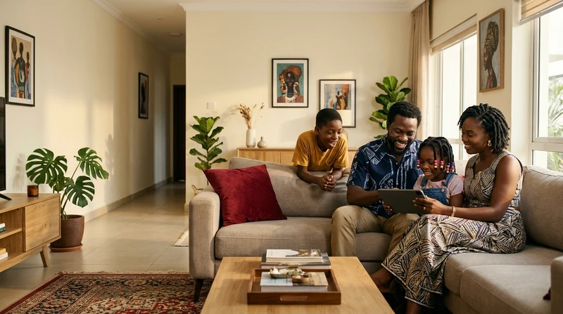
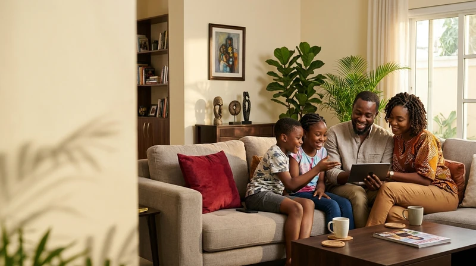
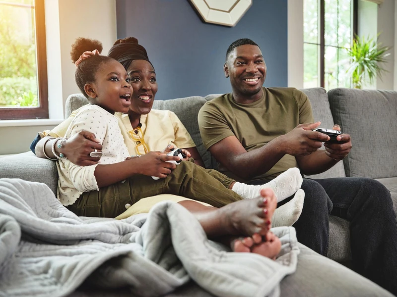
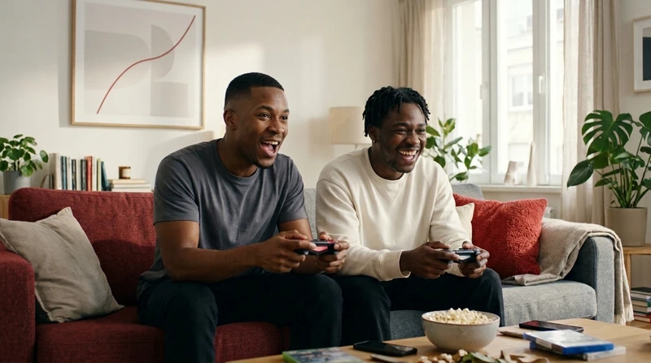

Your photography, in the website.
Only supplied images from Ikonectt_Connectivity_Image_Library/newimages. Original files are preserved. Website copies are resized and encoded for delivery; no new image generation or scene retouching.
A keeps its three original hero slides, with the supplied tablet-family scene placed as the second slide. Use the hero arrows to browse. E keeps its longer city opening and network signals, followed by family and business scenes.

family tablet 1
A hero — second slide; original stories retained. Also used in E’s hero.
Family_using_tablet_together_1ab2422c.jpg · 1376 × 768

family tablet 2
E Residential — top hero.
Family_using_tablet_together_1b1ddf84.jpg · 1376 × 768

family gaming
A homepage Residential; E Residential editorial section.
image.png_5d67509c.jpg · 2048 × 1536
conference room
E Business editorial, SME hero and business slideshow scene. A homepage now uses architecture.
make_the_stand_suit_guys_20261027180922.jpg · 1376 × 768

friends gaming
Retained in the supplied library; Residential now uses a text-led introduction.
Men_playing_video_games_together_467cdb85.jpg · 1376 × 768
red emblem
E homepage company story and A About hero.
Red_acrylic_emblem_on_table_22960efd.jpg · 1376 × 768